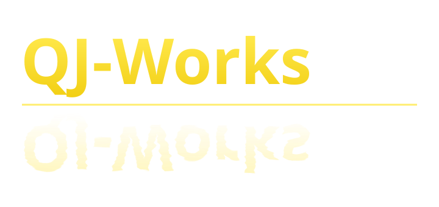

現状確認
店名、住所、電話番号、営業時間、カテゴリ、写真、サービス内容、ホームページへのリンクを確認します。

納品するもの
現在の表示を確認し、事業者ご本人と合意した内容だけを修正します。
店名、住所、電話番号、営業時間、カテゴリ、写真、サービス内容、ホームページへのリンクを確認します。
不足や不一致を、すぐ直す項目・後で検討する項目に分け、A4で1〜2ページにまとめます。
合意した基本情報を5項目まで修正します。QJ-Worksが作業する場合は、所有権ではなく管理者権限を使用します。
変更内容、今後ご自身で確認する場所、口コミへ返信するときの注意点をオンラインで説明します。
料金
初回相談、現状確認、改善報告書、基本情報5項目までの修正、30分の説明、小さな修正1回を含みます。
基本料金10,000円
対象は1店舗・1プロフィールです。
写真撮影、ホームページ自体の修正、毎月の投稿、口コミ返信代行は別途相談です。
月額5,000円〜
初回作業後、営業時間や写真などを定期的に確認する必要がある店舗だけに提案します。
進め方
店舗名、困っていること、現在の管理状況を確認します。
確認項目、変更項目、納品物、料金を文書で決めます。
報告書を提出し、承認された情報だけを修正して結果を説明します。
大切なこと
Googleビジネスプロフィール自体は無料で利用できます。料金は、QJ-Worksが行う確認、整理、修正、説明に対するものです。
口コミの購入・作成、店名への不自然なキーワード追加、無断変更は行いません。店舗は常に所有者権限を保持し、QJ-Worksは必要な期間だけ管理者として作業します。
お問い合わせ
Googleフォームに店舗名または公開ページのURLと、困っている点を記入してください。パスワードは送らないでください。